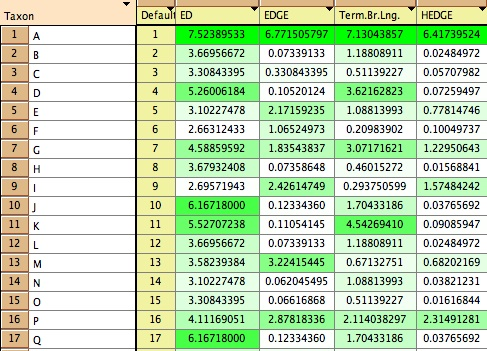
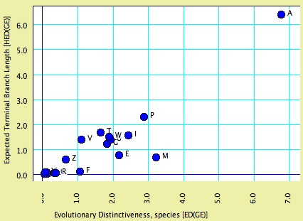
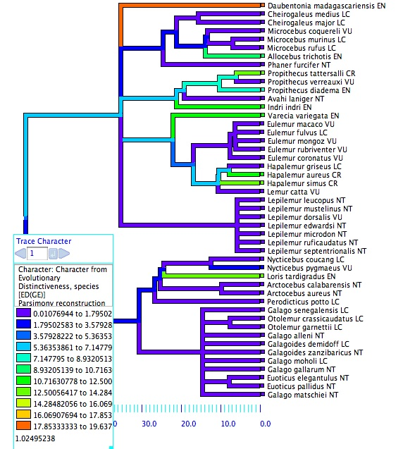

| Tuatara:
Conservation priority in a phylogenetic context Wayne P. Maddison & Arne Ø. Mooers |
Version 1.01 (August 2009)
Tuatara is a package of Mesquite modules designed for analyzing conservation priorities in a phylogenetic context. The approach stems from the observation made by R.I. Vane-Wright and colleagues at the Natural History Museum in London (1991), and refined by R.M. May of Oxford (1990) that evolutionary distinctiveness would be a useful metric for helping rank species for conservation. The emblematic species for such an approach is the New Zealand tuatara, a lineage that roots deep (over 200 million years ago, Hugall et al., 2007) and whose sister clade comprises all snakes and lizards. With the increase in large, complete, dated phylogenies, the approach can be made operational.
This version of Tuatara is 1.01. It has the same calculations as version 1.0; the only change in version 1.01 concerns Mesquite's update notification system. Tuatara requires Mesquite version 2. It is incompatible with Mesquite version 1.12 and earlier.
Tuatara's website is http://mesquiteproject.org/packages/tuatara.This page explains how to use Tuatara. Contents:
1. Installing Tuatara |
As of version 2.7 of Mesquite, you can install Tuatara by selecting Check Now for Notices/Installs in the File menu, and entering the following URL:
http://mesquiteproject.org/packages/Tuatara/install.xml
You can also install Tuatara by hand. Download it here: http://mesquiteproject.org/packages/tuatara/tuatara.zip. When you unzip it, you will find it makes a directory "tuatara". Please move "tuatara" inside the mesquite folder within your Mesquite_Folder. Thus, when you have moved it, you should have "tuatara", within "mesquite", within "Mesquite_Folder". The next time you start Mesquite, it should load Tuatara (a Tuatara banner will appear in the startup window).
Source code for Tuatara may be found at http://svn.mesquiteproject.org:8080/repository/Tuatara/
Tuatara also comes with example files. You can find them in the examples folder here. We recommend you try them.
2. Setting up your data file |
For Tuatara to calculate conservation priority measures that consider phylogeny, you need to set up a data file with the species and their phylogenetic tree. You can do this in the usual Mesquite way, for instance importing a NEXUS or Phylip file, or starting from scratch by creating a new block of taxa and naming them. Before attempting any of the calculations of measures, open a Tree Window and arrange for the desired tree to be shown.
The phylogenetic tree should be shown in the Tree Window, and have branch lengths associated. You can see the branch lengths labeled by going to the Drawing menu of the Tree Window, to the Branch Lengths Labels submenu. You can also see the branch lengths visually by asking that the tree be drawn with Branches Proportional to Lengths (also in the Drawing menu). For some of the calculations, polytomous trees are not permitted.
Many of the calculations also require an indication of the extinction risk of each species, that is, its probability of extinction. To indicate these, create a Continuous data matrix (Characters menu, New Empty Matrix), and enter a character whose values are between 0.0 (species certain to survive) and 1.0 (species certain to go extinct). Then, when asked by the calculation to choose a source of characters, choose Stored Characters and this matrix.
3. Measures of conservation priority |
Phylogenetic measures of conservation priority generally assess what evolutionary history is represented (possibly uniquely) by a species, and thus which might be lost if the species goes extinct. This is done by counting the length of phylogenetic branches belonging to the species. The terminal branch of the species belongs uniquely to it, but some measures also include some proportion of the lengths of branches of ancestors shared with other species. The "credit" for the length of an ancestral branch can be divided equally among all extant descendant species (species-weighted sharing), or equally among the descendant clades of the branch (clade-weighted sharing). We can think of the total branch length credited to the species as either "the evolutionary history represented by the species" or "the distinctiveness of the species".
There are two other considerations that have been proposed in phylogenetic measures of conservation priority. First, one can consider using the estimated extinction probabilities of species to estimate what might be the expected distinctiveness of the species in the future, after some extinction occurs (Steel et al. 2007; Faith 2007). Second, one can multiply the distinctiveness of the species (the history it represents) by its probability of extinction, so as to produce a species “value” that includes the urgency with which we must act to save it (Redding and Mooers, 2006; Isaac et al., 2007).
Tuatara permits you to mix and match these possibilities to generate several alternative measures of conservation priority. Tuatara has three alternative measures of a species’ distinctiveness (history represented): (i) unique, (ii) including ancestral branches weighted by related species or (iii) including ancestral branches weighted by related clades. Each of these in turn can be measured either (i) directly or (ii) as expected after some extinction, and each can be multiplied by current extinction risk (for urgency). For instance, EDGE (Isaac et al. 2007) measures species value by terminal branch length plus species-weighted shares of ancestral branches, which it then multiplies by extinction risk. HEDGE (Steel et al. 2007) measures species value by terminal branch length, as expected after some extinction, and weighted by extinction risk. If you choose to weight by extinction risk, then abbreviated name of the measure indicates this by including "GE".
The full suite of available measures of conservation priority is as follows:
In Mesquite these measures, if they permit polytomies, assume that the polytomies are "hard", that is, represent multiple instantaneous speciation and not uncertainty.
4. Use of Conservation Measures |
The examples files show the use of conservation priority measures in Mesquite.
You can access these calculations:
Go to the List of Taxa Window's Column menu, and choose Number for Taxon>Conservation Priority. You will be asked to choose a measure and its settings. You can later change the settings by clicking on a the column heading; a drop down menu will appear.

You can make either a Bar & Line chart for taxa, or a Scattergram for taxa, in order to display the priority measures. Indicate that the value to calculate for the taxa is Conservation Priority. You will be asked to choose a measure and its settings. Here shown is a scattergram to show the relationship between two conservation priority measures, HEDGE and EDGE. This was done by selecting "Different" to the scattergram's question about the same or different axes.

To display conservation priorities on the tree, we will treat them as characters that we map on the tree. Choose Analysis>Trace Character History. For Source of characters to reconstruct, select Show Secondary Choices, and choose Calculated Value for Taxon. For Value to Calculate for Taxa, choose Conservation Priority and then continue to specify the conservation priority measure.

5. Other Calculations/Features |
Rarefy Tree by Extinction Probabilities: This feature deletes species from the tree according to each species extinction probabilities (which are stored in a continuous data matrix; see setting up). Thus, if a species has extinction probability of 0.2, there is a 0.2 probability it will be deleted from the tree. This feature therefore simulates a particular scenario of survival of species. If you ask Mesquite to generate many such trees, you can calculate how various phylogenetic statistics (whether conservation oriented or not) will vary according to variation in what species survive. You can access this by selecting "Randomly Modify Current Tree" in the various places this occurs. For instance, you can make a chart of trees, using Randomly Modify Current Tree as your source of trees. Or, you could generate a block of such trees (Make New Tree Block from... in the Taxa & Trees menu).
Total Phylogenetic Diversity: This calculates the amount of history (or diversity) represented by the tree, in the manner expected for conservation calculations. It is simply the total path length (sum of branch lengths) of the tree, where unassigned branches are treated as of zero length, and the root's length is counted. This can be accessed wherever calculations are done that assign numbers to trees (e.g., in a chart for trees, or in the List of Trees window, or in the tree legend of the Tree Window). If some taxa are selected, then it gives the total path length of only the smallest subtree including all of the selected taxa, down to and including the root. (If no taxa are selected, then it uses the whole tree.)
6. Troubleshooting |
Problem: When you ask to calculate one of the measures of conservation priory, Mesquite asks you for a source of characters but only lists Simulated Characters or Simulated Characters on trees. You are not interested in simulated characters; you simply want to use estimated extinction probabilities in the calculation.
Solution: When you ask to weight by extinction risk, or if you use one of the measures calculating expected values, then Tuatara needs to know the extinction risks for the species. Mesquite is suggesting Simulated Characters because there is no other available source of information on extinction probabilities. As noted above under setting up, you need to enter these extinction probabilities as a continuous matrix before you request the calculations. Then, when you ask for the measures to be calculated, Mesquite will offer a choice of a source of characters — choose Stored Characters.
Problem: When you ask to calculate one of the measures of conservation priority, Mesquite says that "No source of a current tree could be found".
Solution: As noted above under setting up, you need to have a tree window open and showing the tree with which you want to calculate the conservation priority measures.
Problem: You can't figure out how to make a chart showing conservation priorities.
Solution: Conservation priorities are values that pertain to species (in Mesquite's context, these would be "taxa"). Thus, you want a chart for taxa, and thus choose from the Analysis menu either a Bar & Line Chart for Taxa, or a Scattergram for Taxa.
7. Citation |
The citation for Tuatara is:
Maddison, W.P. & A.Ø.Mooers. 2007. Tuatara: Conservation priority in a phylogenetic context. Version 1.0. http://mesquiteproject.org/packages/tuatara
8. Acknowledgments |
Tuatara development was supported by NSERC Discovery grants to WPM and AØM, and by fellowships to WPM and AØM at the Wissenschaftskolleg zu Berlin.
9. References |
Faith, D.P. 2007. Phylogenetic diversity and conservation. In S.P. Carroll and C.Fox, eds. Conservation Biology: Evolution in action. Oxford University Press, New York, NY.
Hugall, A.F., Foster, R., & M.S. Lee. 2007. Calibration choice, rate smoothing and the pattern of tetrapod diversificaiton according to the long-nuclear gene RAG-1. Systematic Biology 56:543-563.
Isaac, N.J.B., Turvey, S.T., Collen, B., Waterman, C. and Baillie, J.E.M. 2007. Mammals on the EDGE: conservation priorities based on threat and phylogeny. PLoS ONE 2(3):e296
May, R.M. 1990. Taxonomy as Destiny. Nature, 347:129–30
Redding, D.W. and Mooers, A.O. 2006. Incorporating evolutionary measures into conservation prioritization. Conservation Biology, 20:1670–8.
Steel, M., Mimoto, A., and A.O. Mooers. 2007. Hedging one's bets: quantifying a taxon's expected contribution to future phylogenetic diversity. Evolutionary Bioinformatics Online 2007 3: 237-244.
Vane-Wright, R. I., C. J. Humphries, and Williams. P.H. 1991. What to Protect? Systematics and the agony of choice. Biological Conservation 55: 235.
Copyright © 2007 Wayne P. Maddison & Arne Ø. Mooers